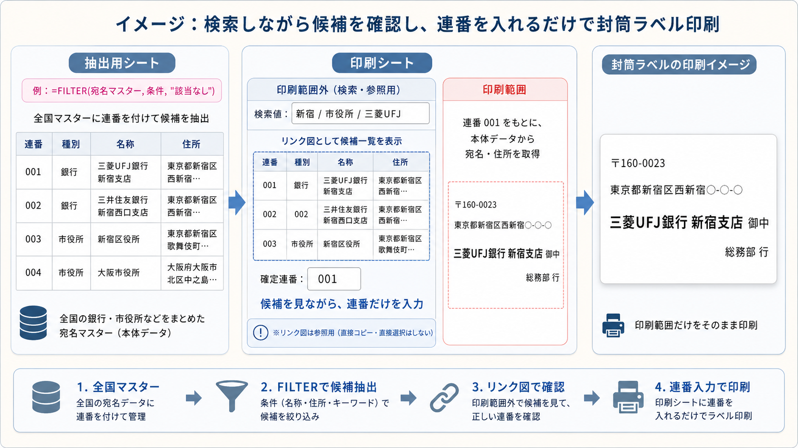

🔎 FILTER関数とリンク図で候補を確認し、連番だけで封筒ラベル印刷する方法
💡 検索結果を見ながら、連番だけを入力して印刷する
ExcelのFILTER関数とリンク図を組み合わせると、候補一覧を見やすく表示しながら、必要な番号だけを入力して封筒ラベルや宛名ラベルを印刷する仕組みを作れます。
ポイントは、銀行コードや支店コード、市区町村コードなどをそのまま使うのではなく、宛名マスター側に連番を用意しておくことです。利用者は候補一覧を見て、左端の連番だけを印刷シートへ入力します。

Excel 2019以前などで
FILTER関数が使えない場合は、抽出用シートの候補一覧を旧関数の方式に置き換えます。詳しい作り方は 旧ExcelでFILTER関数の代わりに複数抽出する方法 を参照してください。
全国マスターから候補を抽出
| 連番 | 種別 | 名称 |
|---|---|---|
| 001 | 銀行 | 三菱UFJ銀行 新宿支店 |
| 002 | 銀行 | 三井住友銀行 新宿西口支店 |
| 003 | 市役所 | 新宿区役所 |
リンク図として候補一覧を表示
| 連番 | 種別 | 名称 |
|---|---|---|
| 001 | 銀行 | 三菱UFJ銀行 新宿支店 |
| 003 | 市役所 | 新宿区役所 |
候補を見ながら、連番だけを入力
〒160-0023
東京都新宿区西新宿○-○-○
三菱UFJ銀行 新宿支店 御中
総務部 行
この構成にすると、検索や候補確認は印刷シート上で行いながら、実際に印刷されるのは封筒ラベル部分だけにできます。リンク図は参照用なので、候補一覧を印刷範囲外に置いても、印刷範囲を正しく設定しておけば印刷物には出ません。
支店コードや市区町村コードではなく、連番にすると使いやすい
銀行支店や市役所などを検索する場合、正式な銀行コード、支店コード、市区町村コードをそのまま入力させる方法もあります。しかし、実務では次のような問題があります。
- 銀行コードと支店コードの両方を入力する必要がある
- 支店コードだけでは別の銀行と重複する可能性がある
- 市区町村コード、事業所番号、部署番号など、データの種類によって番号体系が違う
- 利用者が正式なコード体系を覚えていない
- 検索結果からコピーできると思われると、リンク図の仕様と合わない
そこで、宛名マスターの一番左に001、002、003のような連番を用意しておきます。利用者は検索結果を見ながら、目的の行の連番だけを入力すればよくなります。
データの種類が銀行、支店、市役所、取引先、部署などに分かれていても、利用者は同じ操作で使えます。候補を見て、左端の連番を入力するだけです。
おすすめのシート構成
この仕組みでは、次の3つの役割に分けると管理しやすくなります。
| シート | 役割 | ポイント |
|---|---|---|
| 宛名マスター | 全国の銀行、市役所、取引先、部署などの宛名データを管理する本体データ | 一番左に連番を用意する |
| 抽出用シート | FILTER関数で検索候補を作る裏側のシート | リンク図の元になる範囲を整える |
| 印刷シート | 検索、候補確認、連番入力、封筒ラベル印刷を行うシート | 候補一覧は印刷範囲外、ラベルは印刷範囲内に置く |
印刷シートの中に、印刷される場所と印刷されない場所を分けて作ります。検索欄とリンク図の候補一覧は印刷範囲外に置き、封筒ラベル部分だけを印刷範囲にします。
【準備】宛名マスターに連番を用意する
まず、宛名マスターに次のような列を用意します。連番は、利用者が入力するための番号です。銀行コードや支店コードとは別に、画面操作用の番号として作ります。
| 連番 | 種別 | 名称 | 郵便番号 | 住所 | 部署 | 検索用文字列 |
|---|---|---|---|---|---|---|
| 001 | 銀行 | 三菱UFJ銀行 新宿支店 | 160-0023 | 東京都新宿区西新宿○-○-○ | 総務部 | 001 銀行 三菱UFJ銀行 新宿支店 東京都新宿区西新宿... |
| 002 | 銀行 | 三井住友銀行 新宿西口支店 | 160-0023 | 東京都新宿区西新宿○-○-○ | 総務部 | 002 銀行 三井住友銀行 新宿西口支店 東京都新宿区西新宿... |
| 003 | 市役所 | 新宿区役所 | 160-8484 | 東京都新宿区歌舞伎町○-○-○ | 担当課 | 003 市役所 新宿区役所 東京都新宿区歌舞伎町... |
| 004 | 市役所 | 大阪市役所 | 530-8201 | 大阪府大阪市北区中之島○-○-○ | 担当課 | 004 市役所 大阪市役所 大阪府大阪市北区中之島... |
検索用文字列の列は必須ではありませんが、作っておくと検索式が見やすくなります。名称、住所、種別、カナ、部署などをまとめて検索対象にできます。
=[@連番]&" "&[@種別]&" "&[@名称]&" "&[@住所]&" "&[@部署]001、002のように先頭ゼロを使う場合は、連番列を文字列として扱うか、表示形式を整えてください。数値の1と文字列の001が混在すると、XLOOKUPで一致しない原因になります。
【抽出用シート】FILTER関数で候補一覧を作る
次に、抽出用シートで検索候補を作ります。印刷シートの検索値セルを参照して、該当する候補だけを表示します。
例えば、印刷シートのB3セルに検索値を入力する場合、抽出用シートには次のような式を入れます。
=FILTER(
宛名マスター[[連番]:[住所]],
ISNUMBER(SEARCH(印刷シート!$B$3,宛名マスター[検索用文字列])),
"該当なし"
)見出しも含めてリンク図にしたい場合は、VSTACK関数を組み合わせます。
=VSTACK(
宛名マスター[[#Headers],[連番]:[住所]],
FILTER(
宛名マスター[[連番]:[住所]],
ISNUMBER(SEARCH(印刷シート!$B$3,宛名マスター[検索用文字列])),
"該当なし"
)
)この抽出結果をそのまま利用者が操作するのではなく、印刷シート側にリンク図として表示します。抽出用シート側では、列幅、罫線、文字サイズ、折り返し表示などを整えておきます。
リンク図は元範囲の見た目をそのまま表示するため、抽出用シート側で見やすい候補一覧に整えておくことが重要です。
【印刷シート】印刷範囲外にリンク図を置く
印刷シートには、次の2つのエリアを作ります。
| エリア | 置くもの | 印刷されるか |
|---|---|---|
| 印刷範囲外 | 検索値入力欄、リンク図の候補一覧、確定連番入力欄 | 印刷しない |
| 印刷範囲 | 封筒ラベル、宛名ラベル、住所、宛名、部署名など | 印刷する |
印刷範囲外には、検索用の入力欄と、抽出用シートの候補一覧を貼り付けたリンク図を置きます。利用者はリンク図を見ながら、目的の行の連番だけを確定連番欄に入力します。
検索値：新宿
候補一覧：リンク図で表示
確定連番：001このとき、リンク図は候補を確認するための表示です。リンク図の中の文字や数字を直接コピーしたり、行をクリックして選択したりするものではありません。
リンク図に表示された内容は、通常のセル範囲のように直接コピーできません。候補を見て、左端の連番を入力欄に入力する使い方にします。
【印刷範囲】確定連番から宛名を取得する
印刷範囲では、確定連番をもとに、宛名マスターから郵便番号、住所、名称、部署などを取得します。例えば、確定連番が印刷シートのB8セルに入力されている場合は、次のようにできます。
| 表示項目 | 数式例 |
|---|---|
| 郵便番号 | =XLOOKUP($B$8,宛名マスター[連番],宛名マスター[郵便番号],"") |
| 住所 | =XLOOKUP($B$8,宛名マスター[連番],宛名マスター[住所],"") |
| 宛名 | =XLOOKUP($B$8,宛名マスター[連番],宛名マスター[名称],"")&" 御中" |
| 部署 | =XLOOKUP($B$8,宛名マスター[連番],宛名マスター[部署],"")&" 行" |
印刷範囲を封筒やラベル用紙に合わせて整えておけば、確定連番を変えるだけで印刷内容が切り替わります。
検索で候補を絞り込み、リンク図で候補を確認し、連番だけを入力する。これなら銀行、市役所、取引先、部署など、異なる種類の宛名を同じ操作で扱えます。
【基本操作】抽出結果をリンク図として貼り付ける
① 抽出用シートの候補一覧を整える
抽出用シートで、リンク図にしたい範囲の見た目を整えます。候補一覧として見やすいように、列幅、行の高さ、罫線、見出しの色、文字サイズなどを調整します。
② 表示したい範囲をコピーする
抽出結果の最大表示件数を考えて、少し広めに範囲を選択します。
A1:D20候補一覧を最大20件まで見せるなら、20行程度をリンク図の範囲にします。広すぎると空白行も表示されるため、実務では最大表示件数を決めておくとよいです。
③ 印刷シートの印刷範囲外にリンク図として貼り付ける
印刷シートに移動し、印刷範囲外の場所に貼り付けます。
ホーム
→ 貼り付け
→ その他の貼り付けオプション
→ リンクされた図これで、検索値を変えるたびに抽出用シートの候補一覧が更新され、印刷シート上のリンク図にも反映されます。
印刷範囲を正しく設定する
この仕組みでは、検索欄やリンク図の候補一覧は印刷に出したくありません。そのため、封筒ラベルや宛名ラベルの部分だけを印刷範囲に設定します。
ページ レイアウト
→ 印刷範囲
→ 印刷範囲の設定検索欄、リンク図、確定連番入力欄は印刷範囲の外に置きます。そうすると、画面上では検索や候補確認に使えますが、印刷時にはラベル部分だけが出力されます。
検索、候補確認、連番入力、印刷結果の確認を同じシート上で行いながら、印刷されるのは指定した範囲だけにできます。
この方法のメリット
① 利用者は連番だけ入力すればよい
銀行コード、支店コード、市区町村コードなどを覚える必要がありません。検索結果を見て、左端の連番を入力するだけで印刷内容を切り替えられます。
② リンク図を安全な参照画面として使える
リンク図はセルではなく、表示用の図として扱えます。候補一覧を見やすく配置でき、印刷シートのレイアウトも崩れにくくなります。
③ 印刷範囲外を検索エリアとして使える
同じ印刷シート上に検索欄や候補一覧を置いても、印刷範囲を分けておけば、実際の印刷物には出ません。封筒ラベル、宛名ラベル、差込印刷風の帳票に使いやすい構成です。
④ データの種類が混在しても扱いやすい
銀行、支店、市役所、取引先、部署、施設など、番号体系が違うデータでも、連番を共通のキーにすれば同じ操作で扱えます。
注意点
① リンク図の内容は直接コピーできない
リンク図は、元のセル範囲と連動して表示内容が更新されますが、表示されている文字や数値を通常のセルのように直接コピーすることはできません。
そのため、リンク図は「見るための参照用」として考えるのが基本です。リンク図に表示された候補を確認し、必要な連番を入力欄に入力して、印刷範囲側で正式なデータ参照を行います。
② 連番の形式を統一する
連番を001、002のように見せたい場合は、文字列として管理するか、表示形式を統一します。入力欄側とマスター側の形式が違うと、検索できない原因になります。
③ 大量件数をリンク図で見せすぎない
リンク図は、10件から20件程度の候補を見せる用途に向いています。何百件も表示する場合は見づらくなるため、検索条件を工夫して候補を絞り込む方が実務的です。
④ 印刷範囲を必ず確認する
検索欄やリンク図が印刷範囲に入っていると、候補一覧まで印刷されてしまいます。完成前に印刷プレビューで、ラベル部分だけが印刷されるか確認してください。
応用できる実務例
この考え方は、封筒ラベル以外にも使えます。
- 銀行支店マスターから送付先を選ぶ
- 市役所、区役所、税務署などの宛名ラベルを印刷する
- 取引先マスターから請求書送付先を選ぶ
- 社内部署マスターから回覧先や配布先を選ぶ
- 施設、店舗、営業所マスターから掲示物や送付状を作る
- 顧客マスターからラベル用紙に印刷する
どの例でも、リンク図は候補確認用、連番入力欄は確定用、印刷範囲は出力用として分けると、操作が分かりやすくなります。
✅ まとめ：リンク図で候補を見て、連番だけで印刷する
FILTER関数は、条件に合うデータを抽出するのに便利な関数です。ただし、抽出結果をそのまま印刷シートに置くと、列幅や行の高さに影響され、レイアウトが崩れやすくなります。
そこで、抽出結果はリンク図として印刷範囲外に表示します。利用者はリンク図に表示された候補を見て、左端の連番だけを入力します。印刷範囲では、その連番をもとに宛名マスターから住所や宛名を取得し、封筒ラベルとして印刷します。
リンク図内の内容を直接コピーするのではなく、候補を確認し、必要な連番を入力欄へ入力して、印刷範囲側で正式な参照を行います。この考え方にすると、Excelだけで使いやすい検索付き印刷シートを作れます。
FILTER関数で候補を抽出し、リンク図で見せ、連番だけで印刷する。
この組み合わせは、Excelの検索結果を「安全で使いやすい印刷補助パーツ」に変える実務的な方法です。